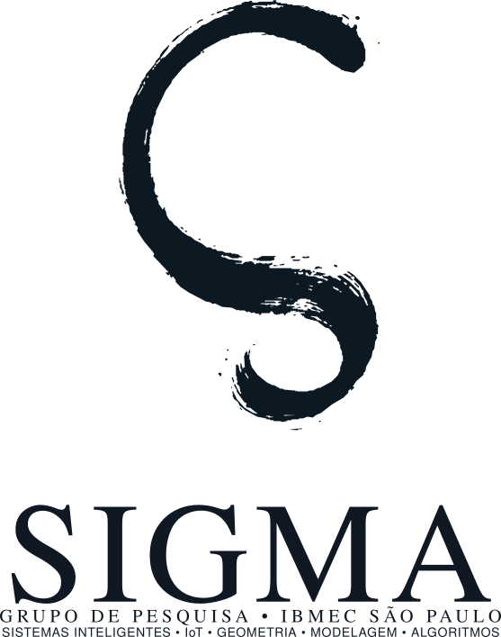
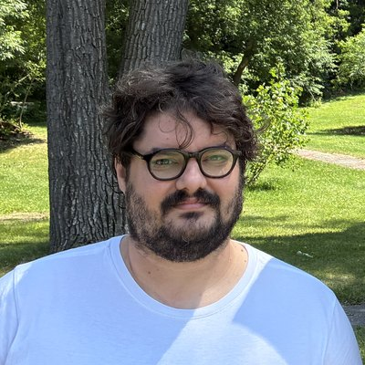
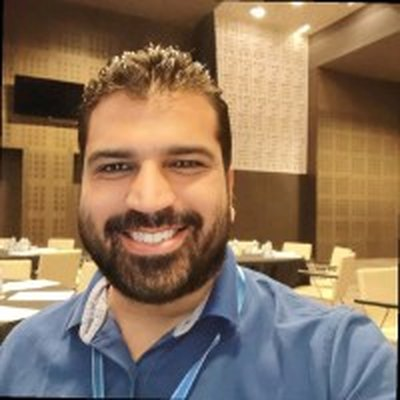

Grupo de pesquisa do Ibmec São Paulo que desenvolve e aplica métodos computacionais para entender, modelar e resolver problemas complexos, com problemas teóricos e aplicações interdisciplinares.
Alunos de graduação participam por iniciação científica, TCC e projetos colaborativos. O que produzimos é público: publicações, código, dados e parcerias.
Preencher o formulário de interesseCampus Faria Lima, São Paulo
Sistemas Inteligentes, IoT, Geometria, Modelagem e Algoritmos.
Aprendizado de máquina e inteligência artificial.
Sensores, dispositivos conectados e sistemas embarcados.
Geometria computacional e processamento de geometria.
Modelagem matemática e simulação de sistemas.
Otimização, métodos numéricos e processamento de sinais.
Aprendizado de máquina e profundo, modelos de linguagem e agentes.
Análise e síntese de som, timbre e recuperação de informação musical.
Processamento de geometria, malhas 3D e impressão 3D.
Modelos matemáticos e métodos numéricos para sistemas físicos e complexos.
Pesquisa operacional, otimização e controle de sistemas dinâmicos.
Análise e modelagem de dados em finanças, recomendação e outras áreas.
Alunos também podem propor temas próprios dentro dessas linhas.

Fundador e coordenador
Doutor em Ciência da Computação (IME-USP) e mestre em Matemática (UFSC). Computação musical, timbre, geometria, impressão 3D e IA.

Pesquisador
Doutor em Engenharia Elétrica (USP), com sanduíche na Mines Paris – PSL. Reatores nucleares, controle quântico e métodos numéricos.
Pesquisadora
Mestra em Informática (UFCG) e doutoranda em Engenharia Elétrica (Mackenzie). Sistemas de informação, programação de computadores, gestão do conhecimento, análise e projeto de sistemas, modelagem UML e POO.
Pesquisador
Doutor e mestre em Administração de Empresas (FEA-USP). Engenharia de software, business intelligence e data analytics.
Pesquisador
Doutor em Ciências e mestre em Engenharia Elétrica (Poli-USP), com pós-doutorado na Poli-USP. Internet das Coisas, redes cognitivas, cidades inteligentes e cibersegurança.
| Ano | Trabalho | Autores e veículo |
|---|---|---|
| 2026 | Timbre discrimination in drum tom-toms: an approach based on audio descriptors and timbre space | Castro, Queiroz. 4th International Conference on Timbre (Montréal) |
| Em revisão | Normal-field-based global orientation for support reduction in 3D printing | Castro, Sacht. Journal of the Brazilian Computer Society |
| 2026 | Drum Tom-Tom Timbre Dataset: Acoustic Recordings of Nine Mechanical Configurations under Sixteen Controlled Tuning Conditions | Castro. Dataset, Zenodo |
| 2026 | Drum Excitation Apparatus Repeatability Dataset: Thirty Repeated Acoustic Responses of One Tom-Tom under Nominally Identical Conditions | Castro. Dataset, Zenodo |
| 2026 | Drum Shell Impact Response Dataset: Acoustic Recordings of Five Isolated Tom-Tom Shells under Controlled Excitation | Castro. Dataset, Zenodo |
| Ano | Trabalho | Autores e veículo |
|---|---|---|
| 2026 | Preliminary Validation of the Thermal Hydraulics Module of MOOSE for Research Reactor Applications | Maciel Neto, Caldas Neto. Springer Proceedings in Mathematics & Statistics |
| 2026 | Três trabalhos: estratégia para um código termo-hidráulico bifásico para SMRs; análise termo-hidráulica de SMRs; validação do MOOSE com o reator IEA-R1 | Maciel Neto et al. International Nuclear Atlantic Conference (INAC) |
| 2024 | CFD study of a fLOFA in the IAEA 10 MW generic MTR reactor using a 3D analytical heat source term | Lopes, Maciel Neto et al. Int. Conf. on Electronics, Engineering Physics and Earth Science |
| 2022 | Motion planning for an ensemble of Bloch equations towards the south pole with smooth bounded control | Maciel Neto, Pereira da Silva, Rouchon. Automatica, v. 145 |
| Ano | Evento | Participação |
|---|---|---|
| 2026 | 4th International Conference on Timbre, Montréal | Apresentação de trabalho |
| 2026 | International Nuclear Atlantic Conference (INAC), Rio de Janeiro | Três trabalhos |
| 2025 | International Conference of Industrial and Applied Mathematics (ICoIAM) | Apresentação de trabalho |
| 2025 | Simpósio Brasileiro de Computação Musical (SBCM) | Organização e revisão |
| 2023 | 9th International Conference on Modeling, Simulation and Applied Optimization | Apresentação de trabalho |
Podem participar alunos de graduação de todos os cursos do Ibmec São Paulo, como Ciência de Dados e IA, Engenharias de Computação, Software e Produção, e Economia. Python e matemática básica ajudam, mas não são pré-requisito: o conteúdo específico de cada projeto é estudado durante a pesquisa.
Procure um dos pesquisadores ou preencha o formulário.
Definição do tema com o orientador.
Leituras guiadas e um primeiro experimento.
Projeto formal, reuniões semanais e meta de publicação.
Projeto de pesquisa orientado por um dos pesquisadores.
Submissão a congressos da área, como SBCM, SIBGRAPI e INAC.
Código, dados e resultados documentados.
Preparação para mestrado e doutorado, no Brasil ou fora.